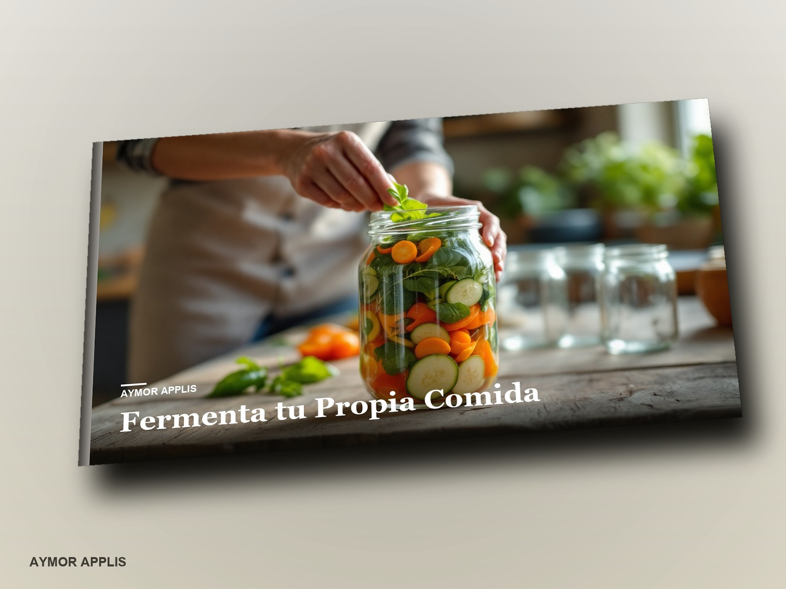
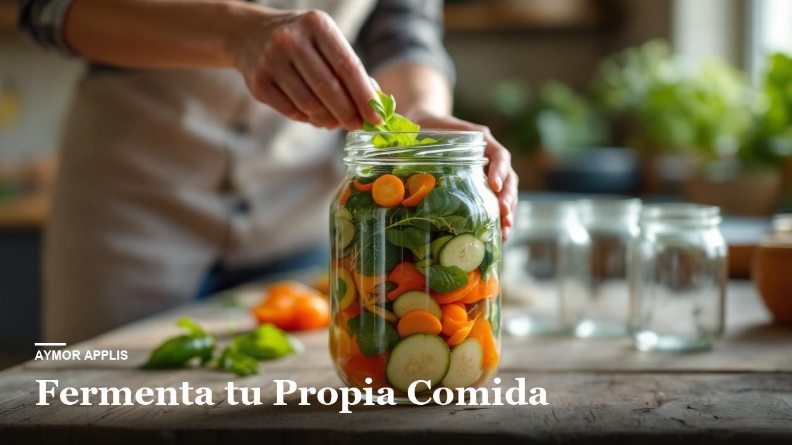
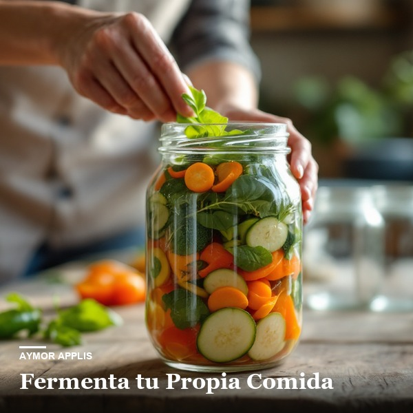

← Back to the catalogue



Home and kitchen · Guide
Ferment Your Own Food
The real science behind sauerkraut, kimchi, kefir and kombucha: how they work, what the research says about them, how to make them safely at home, and step-by-step recipes to start today.
27.99 USDone-time · PDF and EPUB
The book is in English, Spanish, French.
Before you pay ↓What's inside
- The real science behind fermentation
- The types of fermentation, one by one
- How to eat them well, and how not to hurt yourself
- Step-by-step recipes
- Practical application
Who it's for
For anyone who wants to ferment at home with clear safety rules. It is not medical advice: if you are pregnant or breastfeeding, have a weakened immune system, take certain medications, or the ferments are for a child, talk to a health professional first.